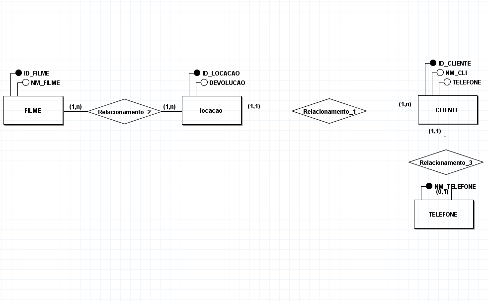
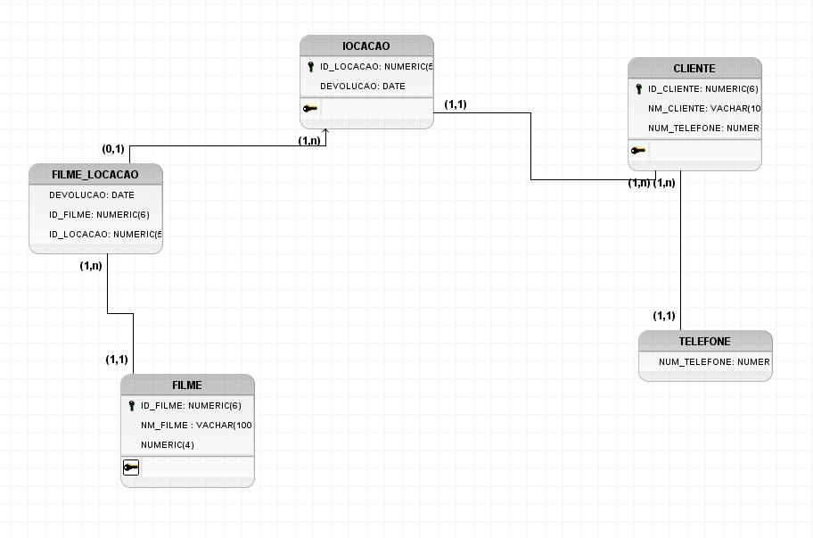
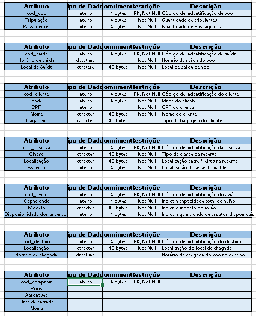

O que é um Banco de Dados?
Um banco de dados é uma coleção organizada de dados que são armazenados e gerenciados de forma eficiente para possibilitar a recuperação e manipulação rápida dessas informações. Eles são essenciais para empresas e aplicativos que precisam armazenar grandes volumes de dados, como clientes, produtos, transações financeiras, entre outros. A estrutura do banco de dados garante a integridade e a consistência dos dados, permitindo que sejam acessados por usuários ou sistemas de forma controlada.
Banco de Dados Relacional
Um banco de dados relacional (RDBMS - Relational Database Management System) é um tipo de banco de dados que armazena os dados em tabelas organizadas por colunas e linhas, de forma similar a uma planilha. As tabelas podem ser relacionadas entre si
por meio de chaves primárias e estrangeiras.
Exemplos de sistemas de gerenciamento de banco de dados relacionais incluem o MySQL, PostgreSQL, Oracle e SQL Server. A principal característica dos bancos de dados relacionais é que eles seguem o modelo relacional, que é baseado em teorias matemáticas de conjuntos e álgebra relacional.
Características principais:
Banco de Dados Não Relacional
Um banco de dados não relacional (NoSQL) é uma categoria de sistemas de banco de dados que não utilizam o modelo relacional tradicional. Esses bancos de dados são projetados para lidar com grandes volumes de dados não estruturados ou semi-estruturados,
como textos, imagens ou vídeos. Eles são especialmente úteis em cenários de big data e aplicações que exigem alta escalabilidade e flexibilidade.
Exemplos de bancos de dados não relacionais:
Características principais:
O que é um Diagrama Conceitual (DER)?
Um Diagrama Entidade-Relacionamento (DER) ou Diagrama Conceitual é uma representação gráfica das entidades de um sistema e os relacionamentos entre elas. O objetivo do DER é capturar a estrutura do banco de dados de forma abstrata, sem se preocupar com detalhes
de implementação. As entidades podem ser, por exemplo, "Cliente", "Produto", "Pedido", e os relacionamentos entre elas podem ser "faz um", "pertence a", etc.

Componentes principais do DER:
O que é um Diagrama Lógico (MER)?
O Diagrama Lógico de Entidade-Relacionamento (MER) é uma versão mais detalhada e refinada do DER, na qual o modelo conceitual é transformado em um modelo
mais próximo de implementação. O MER leva em conta as características específicas do banco de dados relacional, como tipos de dados, cardinalidades e chaves.

Componentes principais do MER:
A principal diferença entre o DER e o MER é que, enquanto o DER é um modelo conceitual, o MER já aborda questões de estrutura de dados mais específicas e ajuda na definição das tabelas e suas chaves.
Exemplos de Diagramas DER e MER
Os diagramas DER e MER são comuns no processo de design de um banco de dados, mas, como eles são gráficos, não consigo gerar imagens diretamente aqui. No entanto, para ilustrar:

Quais Bancos de Dados a Empresa Trabalha?
A escolha do banco de dados depende das necessidades da empresa. Alguns fatores que influenciam essa decisão incluem o tipo de dados a serem armazenados, o volume de informações, a necessidade de escalabilidade e a facilidade de integração com outras tecnologias.
Exemplos de bancos de dados que a empresa pode usar:
O que é um Dicionário de Dados?
O dicionário de dados é um repositório centralizado que descreve os dados que são armazenados em um banco de dados. Ele contém informações detalhadas sobre as entidades, atributos, relacionamentos, tipos de dados, restrições e outras características dos dados. O dicionário de dados é essencial para o gerenciamento de um banco de dados, pois fornece um ponto de referência para desenvolvedores, administradores de banco de dados e analistas.

Um dicionário de dados é uma parte fundamental do processo de design de um banco de dados, pois ajuda a garantir a clareza e a consistência dos dados dentro da organização.